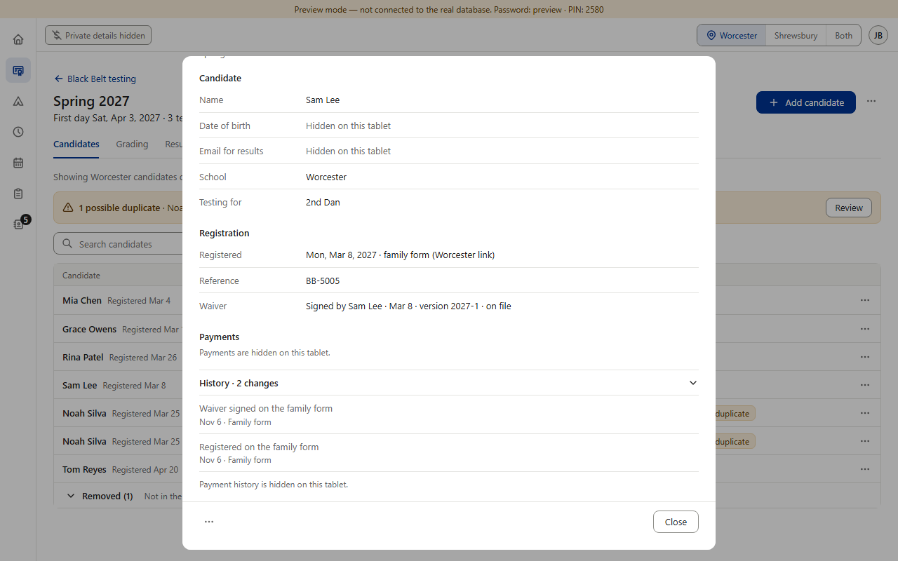
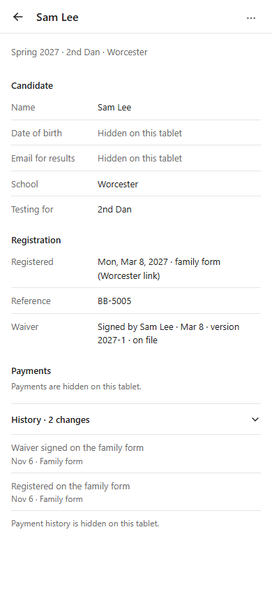
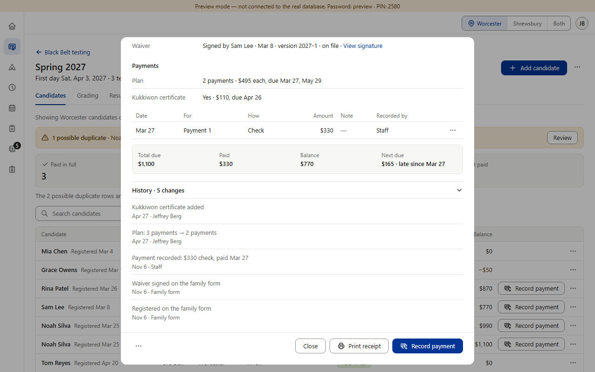
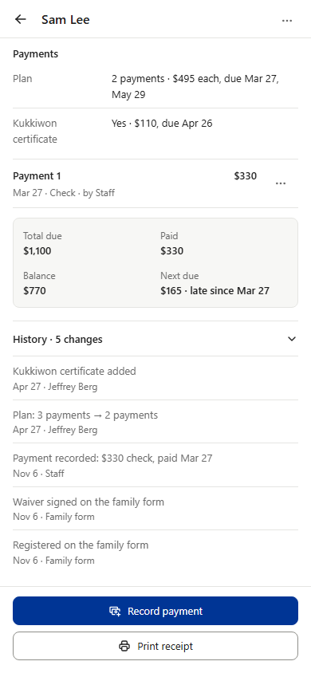

Candidate detail → History (Sam Lee, admin, preview). When someone changes a candidate’s plan (“Plan: 3 payments → 2 payments”) or adds the Kukkiwon certificate, History gets a line for it. While the mat tablet has Hide private details on, should those lines be hidden too? Rulebook v0.972 kept them; v1.036 made the plan a payment detail hidden on the mat tablet. The build already does A.




A parent standing beside the mat tablet: with A they see only “Registered” and “Waiver signed”, then the gray line. Nothing says how the family pays. With B they read “Plan: 3 payments → 2 payments” and “Kukkiwon certificate added”: how the family pays, and that they changed it. That is the payment detail v1.036 hides everywhere else on this tablet (the Payments section already reads “Payments are hidden on this tablet.”).
Either way, the payment lines (“Payment recorded: $330 check …”) are already hidden behind the shared gray line “Payment history is hidden on this tablet.” In A, a change that was only a plan or Kukkiwon change folds into that same gray line; a change that also edited something else (e.g. the name) keeps its other words. With the switch off, both options show every line.